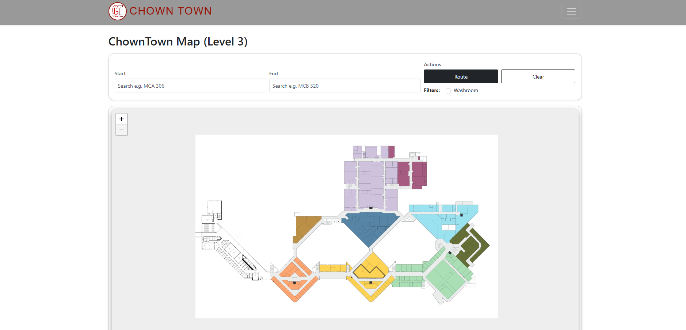
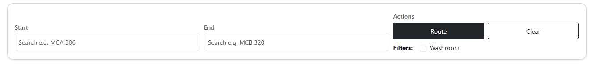
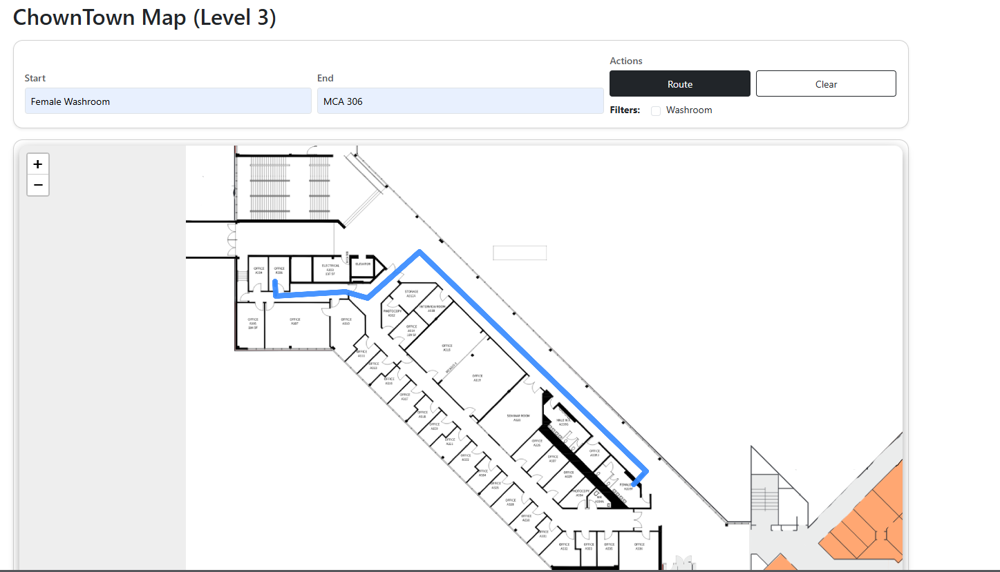

Chown Town
Chown Town is an interactive web map designed to help students, professors, and visitors navigate the complex layout of the Mackenzie Chown building at Brock University. Inspired by tools like Waze and Google Maps, the project focuses on indoor wayfinding, accessibility, and route clarity to make finding classrooms and important campus spaces faster and less stressful.
A smarter way to navigate one of Brock’s most confusing buildings
Chown Town is an interactive indoor navigation project created to improve how users move through the Mackenzie Chown building at Brock University. The app helps users locate classrooms, offices, elevators, washrooms, and other important destinations through a clearer and more guided digital map experience. The project was especially designed for first-year students and visitors who often struggle with the building’s complicated structure and room layout.
What the project is
Chown Town is a web-based wayfinding tool inspired by Waze and Google Maps, but designed for indoor campus navigation. Instead of relying on static floor maps or hallway signs, it provides users with searchable destinations, mapped room locations, and route guidance inside the building itself.
Why I built it
The Mackenzie Chown building is known for being difficult to navigate because of its connected blocks, confusing hallways, and inconsistent room numbering. I wanted to build a tool that would reduce confusion, save time, and make users feel more confident when moving through the building for the first time.
A collaborative project with a strong backend focus
Chown Town was developed as a team project involving research, design, mapping, and development work. While the project benefited from group collaboration, my primary contribution focused on building the functional backbone of the experience and making the navigation system work in a practical way.
Team
This project was created by a team of nine members working across interface ideas, research, planning, visual design, testing, and documentation. Each person contributed to shaping the direction of the project, from early concept development to refinement of the final experience.
- Kylie Schipper
- Megan Smith
- Lauren Berlettano
- Tomas Galvez
- Moztabir Islam
- Roger Li
- Kylan Joynt
- Dimple Mistry
- Danielle Clapiz
My Role
My main responsibility was the backend side of Chown Town. I worked on the routing logic, mapped room coordinates, structured how destinations connect within the building, and developed the search system used to find rooms and points of interest. My work helped turn the project from a visual concept into a usable navigation tool.
- Built routing and navigation logic
- Mapped room and hallway coordinates
- Created destination search functionality
- Structured internal wayfinding connections
- Supported route generation and interaction flow
Static signs and floor maps are not enough for real indoor wayfinding
Large academic buildings can be overwhelming for new users. In Mackenzie Chown, the layout is especially difficult because multiple sections connect in ways that are not immediately obvious. Traditional wall directories and printed floor plans show information, but they do not actively help users understand where they are, what route to take, or how long it will take to reach their destination.
-
1
Confusing building layout
The building has multiple connected areas, long corridors, and room numbering that can feel inconsistent to first-time users. This creates uncertainty and makes users second-guess where they are going.
-
2
Lack of step-by-step support
Static maps only present the layout. They do not guide people from one exact room to another, which makes them less useful when someone is in a rush or already lost.
-
3
Stress for students and visitors
First-year students, professors visiting unfamiliar rooms, and outside visitors all need a faster and clearer way to navigate the building without relying on trial and error.
A digital indoor navigation system built around speed, clarity, and accessibility
Chown Town solves this problem by offering a cleaner navigation experience that makes indoor space more understandable. Users can search for a location, view mapped destinations, see an estimated travel time, and follow clear directions from their current point to the room they need. Accessibility was also an important part of the project, so route planning considers users who may need alternatives to stairs or less direct pathways.
Design Goal
Create a minimal and readable interface that reduces clutter and gives users only the information they need in the moment: where they are, where they want to go, and the best route to get there.
User Goal
Help someone reach a destination quickly and confidently, even if they have never been inside Mackenzie Chown before. The experience should feel simple, familiar, and easy to trust.
From initial concept to a structured navigation system
The project went through research, early interface planning, building layout analysis, coordinate mapping, search design, routing logic, and iterative refinement. While the final concept became much more advanced than the original idea, that evolution helped shape Chown Town into a stronger and more useful product.
-
1
Research and inspiration
I looked at navigation systems such as Google Maps and Waze to understand how route guidance, ETA, search, and movement feedback are presented. I also reviewed how users experience confusion inside academic spaces and what information matters most when navigating under time pressure.
-
2
Planning and user flow
The next step was identifying the main actions users would need: entering a destination, locating rooms, seeing route options, checking accessible paths, and understanding estimated arrival time. This helped shape both the information hierarchy and the screen structure.
-
3
Interface direction
Figma designs and visual planning were used to shape the app’s layout and visual language. The interface direction focused on clean panels, map visibility, readable labels, and a navigation system that feels modern but not overwhelming.
-
4
Backend and routing development
My main contribution was on the backend. I handled the routing system, room coordinate mapping, search bar functionality, and the internal logic used to connect destinations and generate usable routes through the building.
-
5
Iteration and refinement
A lot changed from the initial plan to the current version. As the project developed, the system became more focused on practical navigation, accessibility, and route accuracy. Feedback and testing helped us refine how information should be displayed and how users should move through the map.
Designed around movement, search, and confidence
The features in Chown Town were selected based on the specific challenges of indoor campus navigation. Rather than acting as just a building map, the app is meant to function as a guided wayfinding tool.
GPS-Style Navigation
The app is inspired by familiar navigation tools and is built to give users a route from one location to another inside the building, making indoor movement feel more structured and less confusing.
Accessibility Routing
Chown Town considers users who may need alternative paths by prioritizing routes that can support accessible navigation, including elevators and easier building pathways where needed.
Points of Interest
Important destinations such as classrooms, offices, restrooms, study areas, and other building landmarks are included so users can navigate to more than just room numbers.
ETA and Direction Guidance
Estimated arrival time and route information help users understand not only where to go, but how long it will take, which reduces uncertainty before and during movement.
Interface views, research, and design moments
These screens show the main navigation interface, the destination search flow, and the route result view for Chown Town.



Tools used to design and build Chown Town
Chown Town combines interface planning, user experience thinking, mapping logic, and front-end implementation. The project involved both visual design and backend system work to make the navigation experience function properly.
What the project taught me as a developer and designer
Chown Town taught me that navigation design is not just about maps, but about trust, clarity, and decision-making. A user should not have to think too hard about what to do next. This project pushed me to think more carefully about how interface design, structure, and system logic all work together to reduce stress for the user.
Biggest Challenge
The biggest challenge was translating the confusing real-world layout of Mackenzie Chown into a system that a digital interface could understand. Mapping room coordinates, connecting hallways logically, and making routes feel accurate required a lot of planning and iteration because indoor navigation does not work as simply as outdoor GPS.
What I’m Most Proud Of
I am most proud of building the backend structure that makes the navigation system possible. Working on the routing, map coordinates, and search functionality gave the project a real functional core instead of just a visual concept. It made the app feel like an actual system users could rely on.
Design Learning
I learned that strong visual hierarchy matters even more in navigation interfaces because users are often under time pressure. If the layout is unclear, the product fails even if the information technically exists.
Development Learning
I improved at structuring data for real interaction. Instead of just designing screens, I had to think about how rooms, routes, user input, and path calculations all connect behind the scenes.
How Chown Town could grow in the future
Chown Town already creates a strong foundation for indoor campus wayfinding, but there are several ways the system could become more advanced and more useful over time. Future improvements would focus on accuracy, scale, and real-time usability.